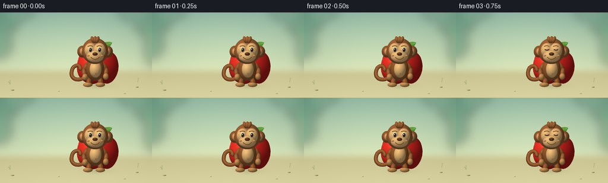
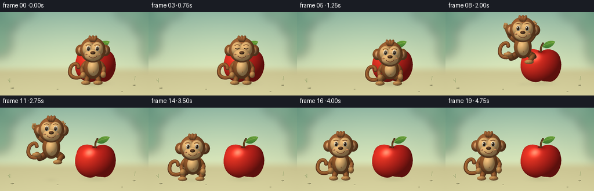

CODING AGENTS AS PIXEL WORLD MODELS
traex/GPT-6.1-Sol · dynamic_spatial_relationship_0061
点击播放 · 原生 RGB 像素
逐轮保存的候选
回放视频、检查图与代码变化。
每份候选均可单独播放。实际图片检查记录在下方工具轨迹中。
候选 01播放与检查图
点击播放 · 原生 RGB 像素


展开代码变化
--- 上一保存版本
+++ 本次保存版本
@@ -0,0 +1,250 @@
+from pathlib import Path
+import math
+import json
+import numpy as np
+from PIL import Image, ImageDraw, ImageFilter
+import artifact_io
+
+ROOT = Path(__file__).resolve().parent
+SPEC = json.loads((ROOT/'task_spec.json').read_text())
+W, H = SPEC['width'], SPEC['height']
+S = 4
+SIZE = (W*S,H*S)
+LIGHT = np.array([-0.46,-0.62,0.64]); LIGHT /= np.linalg.norm(LIGHT)
+
+def bezier(points,n=32):
+ out=[]
+ for k in range(0,len(points)-1,3):
+ a,b,c,d=[np.array(p,float) for p in points[k:k+4]]
+ for t in np.linspace(0,1,n):
+ q=(1-t)**3*a+3*(1-t)**2*t*b+3*(1-t)*t*t*c+t**3*d
+ out.append(tuple(q))
+ return out
+
+def stroke(im, pts, color, width):
+ pts=[(int(x*S),int(y*S)) for x,y in pts]
+ d=ImageDraw.Draw(im)
+ d.line(pts,fill=color,width=max(1,int(width*S)),joint='curve')
+ r=width*S/2
+ for x,y in [pts[0],pts[-1]]:
+ d.ellipse((x-r,y-r,x+r,y+r),fill=color)
+
+def ellipsoid(im,xy,radii,color,angle=0,shine=.08):
+ cx,cy=xy; rx,ry=radii
+ extent=max(rx,ry)+1
+ x0=max(0,int((cx-extent)*S));x1=min(W*S,int((cx+extent)*S)+1)
+ y0=max(0,int((cy-extent)*S));y1=min(H*S,int((cy+extent)*S)+1)
+ if x1<=x0 or y1<=y0:return
+ yy,xx=np.mgrid[y0:y1,x0:x1].astype(float)
+ dx=xx/S-cx; dy=yy/S-cy
+ ca=math.cos(angle);sa=math.sin(angle)
+ u=(dx*ca+dy*sa)/rx;v=(-dx*sa+dy*ca)/ry
+ r2=u*u+v*v;z=np.sqrt(np.maximum(0,1-r2))
+ # Smooth clay forms, with a warm key light and cool reflected light.
+ nx=u*ca-v*sa;ny=u*sa+v*ca
+ diffuse=np.maximum(0,nx*LIGHT[0]+ny*LIGHT[1]+z*LIGHT[2])
+ intensity=.49+.51*diffuse+.08*z
+ half=np.array([-.24,-.33,.91]);half/=np.linalg.norm(half)
+ spec=np.maximum(0,nx*half[0]+ny*half[1]+z*half[2])**28*shine
+ rgb=np.array(color)[None,None,:]*intensity[:,:,None]+spec[:,:,None]*255
+ # cool lower-side bounce, subtle soft silhouette
+ rgb+=np.maximum(0,ny)[:,:,None]*np.array([2,5,6])
+ rgba=np.zeros((*r2.shape,4),np.uint8)
+ rgba[:,:,:3]=np.uint8(np.clip(rgb,0,255));rgba[:,:,3]=(r2<=1)*255
+ im.alpha_composite(Image.fromarray(rgba),(x0,y0))
+
+def limb(im,a,b,r,color):
+ mid=((a[0]+b[0])/2,(a[1]+b[1])/2)
+ length=math.hypot(b[0]-a[0],b[1]-a[1])
+ angle=math.atan2(b[1]-a[1],b[0]-a[0])-math.pi/2
+ ellipsoid(im,mid,(r,length/2+r),color,angle,.07)
+
+def shadow(im,cx,cy,rx,ry,opacity):
+ sh=Image.new('RGBA',SIZE)
+ d=ImageDraw.Draw(sh)
+ for j in range(18,0,-1):
+ f=j/18
+ a=int(opacity*(1-f)**1.5/3)
+ d.ellipse(((cx-rx*f)*S,(cy-ry*f)*S,(cx+rx*f)*S,(cy+ry*f)*S),fill=(47,57,34,a))
+ sh=sh.filter(ImageFilter.GaussianBlur(1.8*S))
+ im.alpha_composite(sh)
+
+# Soft botanical set, with an unobtrusive floor and no text or cuts.
+def background():
+ yy,xx=np.mgrid[:H*S,:W*S].astype(float); yy/=S;xx/=S
+ top=np.array([136,175,157]); low=np.array([214,225,181])
+ blend=np.clip(yy/107,0,1)
+ rgb=top+(low-top)*blend[:,:,None]
+ glow=np.exp(-((xx-125)/116)**2-((yy-53)/80)**2)
+ rgb+=glow[:,:,None]*np.array([16,14,10])
+ ground=np.array([205,199,149])+(yy[:,:,None]-104)*np.array([.30,.32,.30])
+ f=np.clip((yy-89)/19,0,1);f=f*f*(3-2*f)
+ rgb=rgb*(1-f[:,:,None])+ground*f[:,:,None]
+ vign=((xx-128)/190)**2+((yy-74)/160)**2
+ rgb-=vign[:,:,None]*8
+ im=Image.fromarray(np.uint8(np.clip(rgb,0,255))).convert('RGBA')
+ foliage=Image.new('RGBA',SIZE)
+ d=ImageDraw.Draw(foliage)
+ # Defocused peripheral jungle leaves keep the characters dominant.
+ for box,col in [((-35,-25,33,40),(47,107,82,95)),((-22,28,20,78),(48,114,86,90)),((227,-18,282,45),(53,111,80,85)),((243,30,287,95),(66,124,87,85)),((7,-27,59,13),(72,128,94,65)),((198,-28,247,15),(82,132,95,65))]:
+ d.ellipse(tuple(v*S for v in box),fill=col)
+ foliage=foliage.filter(ImageFilter.GaussianBlur(8*S));im.alpha_composite(foliage)
+ # tiny ground details, subdued and away from the action
+ for x,y,rx,ry in [(21,131,3,.8),(231,126,2.5,.8),(210,137,1.6,.5),(99,133,1.5,.4)]:
+ ellipsoid(im,(x,y),(rx,ry),(175,170,122),shine=0)
+ stroke(im,[(17,121),(17,115)],(134,155,99,160),.7)
+ stroke(im,[(17,120),(14,117)],(134,155,99,150),.7)
+ stroke(im,[(232,117),(233,111)],(134,155,99,150),.7)
+ return im
+
+APPLE_X=165
+
+def apple(im):
+ cx=APPLE_X;cy=91
+ shadow(im,cx,123,38,7,90)
+ # Stem behind the apple; light-catching green leaf.
+ stem=bezier([(cx,69),(cx-2,62),(cx+1,58),(cx+3,54)])
+ stroke(im,stem,(79,48,25,255),3.3)
+ stroke(im,[(cx-.6,65),(cx+.6,59),(cx+2,55)],(137,96,44,255),.8)
+ leafpts=bezier([(cx+2,60),(cx+7,47),(cx+21,49),(cx+24,51),(cx+20,61),(cx+10,65),(cx+2,60)])
+ m=Image.new('L',SIZE);ImageDraw.Draw(m).polygon([(x*S,y*S) for x,y in leafpts],fill=255)
+ yy,xx=np.mgrid[:H*S,:W*S].astype(float);xx/=S;yy/=S
+ rgb=np.zeros((H*S,W*S,3),np.uint8)
+ f=np.clip((yy-47)/20,0,1)
+ for c,(a,b) in enumerate(zip((116,170,58),(37,100,44))):rgb[:,:,c]=(a+(b-a)*f).astype(np.uint8)
+ leaf=Image.fromarray(rgb).convert('RGBA');leaf.putalpha(m);im.alpha_composite(leaf)
+ stroke(im,bezier([(cx+3,59),(cx+9,55),(cx+15,54),(cx+21,52)]),(169,196,88,255),.6)
+ # Sculpted apple outline, with a top dimple and softly lobed bottom.
+ p=[(0,-23),(11,-31),(30,-26),(33,-10),(39,8),(26,31),(14,29),(7,28),(5,29),(0,27),(-5,30),(-10,31),(-18,28),(-34,22),(-39,5),(-33,-12),(-30,-29),(-13,-30),(0,-23)]
+ path=bezier([(cx+x,cy+y) for x,y in p],44)
+ mask=Image.new('L',SIZE);ImageDraw.Draw(mask).polygon([(x*S,y*S) for x,y in path],fill=255)
+ u=(xx-cx)/37;v=(yy-cy)/32;z=np.sqrt(np.maximum(0,1-u*u-v*v))
+ diff=np.maximum(0,-.5*u-.5*v+.70*z)
+ bright=.41+.58*diff
+ red=np.array([225,39,32])*bright[:,:,None]
+ # Golden-red on the illuminated shoulder, dark burgundy around the underside.
+ warm=np.exp(-((u+.46)/.56)**2-((v+.30)/.66)**2)
+ red+=warm[:,:,None]*np.array([17,17,6])
+ hdot=np.maximum(0,-.3*u-.43*v+.85*z)
+ red+=((hdot**42)*.47)[:,:,None]*np.array([255,211,175])
+ dimple=np.exp(-(u/.23)**2-((v+.7)/.14)**2)
+ red-=dimple[:,:,None]*np.array([53,17,13])
+ rng=np.random.default_rng(13)
+ # restrained fine apple skin texture, not noisy at viewing size
+ noise=rng.normal(0,.6,z.shape)
+ red+=noise[:,:,None]
+ fruit=Image.fromarray(np.uint8(np.clip(red,0,255))).convert('RGBA');fruit.putalpha(mask);im.alpha_composite(fruit)
+ ellipsoid(im,(cx-2,68),(4.2,1.5),(117,36,24),shine=.02)
+ stroke(im,[(cx-.3,68),(cx-.8,63)],(102,65,29,255),2)
+
+FUR=(143,86,43);FUR_LIGHT=(154,94,49);DARK_FUR=(120,70,35);TAN=(225,178,113);PALM=(191,137,77)
+
+def monkey(im,x,foot,jump,crouch,t):
+ # Local coordinate system grounded at the toes.
+ body_y=foot-29+4*crouch
+ head_y=body_y-30+3*crouch
+ sway=.8*math.sin(t*2.3) if not jump else 0
+ x+=sway
+ def p(dx,dy):return(x+dx,body_y+dy)
+ # Long curling tail, visible around the left silhouette.
+ wiggle=math.sin(t*2)*2
+ pts=bezier([p(-10,9),p(-24,24),p(-43,20),p(-39,4),p(-37,-7),p(-25,-9+wiggle),p(-25,0+wiggle)])
+ stroke(im,pts,(87,49,27,255),6.5)
+ stroke(im,[(a,b-.65) for a,b in pts],(139,84,42,255),4.8)
+ stroke(im,[(a-.4,b-1.3) for a,b in pts],(174,113,58,255),1.2)
+ # Legs: knees tuck visibly while airborne and extend on landing.
+ if jump:
+ legs=[(p(-8,11),p(-19,19),p(-24,12)),(p(8,11),p(18,16),p(12,25))]
+ elif crouch:
+ legs=[(p(-7,10),p(-17,17), (x-16,foot-2)),(p(7,10),p(17,17),(x+14,foot-2))]
+ else:
+ legs=[(p(-7,10),p(-10,20),(x-11,foot-3)),(p(7,10),p(9,20),(x+10,foot-3))]
+ for a,b,c in legs:
+ limb(im,a,b,6,DARK_FUR);limb(im,b,c,4.5,FUR)
+ ellipsoid(im,(c[0]-1.2,c[1]+1),(8,3.8),PALM,shine=.04)
+ for dx in [-3,0,3]:
+ stroke(im,[(c[0]+dx,c[1]+1),(c[0]+dx-1,c[1]+3)],(123,80,47,255),.45)
+ # Arm silhouettes go behind the torso.
+ if jump:
+ arms=[(p(-11,-9),p(-23,-19),p(-29,-35)),(p(11,-9),p(22,-25),p(19,-39))]
+ else:
+ arms=[(p(-12,-8),p(-19,3+2*crouch),p(-17,14)),(p(12,-8),p(19,2+2*crouch),p(18,13))]
+ for a,b,c in arms:
+ limb(im,a,b,4.5,FUR);limb(im,b,c,3.6,FUR_LIGHT)
+ ellipsoid(im,c,(4.7,5.6),PALM,angle=(-.2 if jump else .15),shine=.04)
+ if jump:
+ for dx in [-2.2,0,2.1]:limb(im,(c[0]+dx,c[1]-1),(c[0]+dx-.4,c[1]-5.8),.9,PALM)
+ limb(im,(c[0]+2,c[1]),(c[0]+5,c[1]-2),1.2,PALM)
+ else:
+ for dx in [-2,0,2]:stroke(im,[(c[0]+dx,c[1]+1),(c[0]+dx,c[1]+3.1)],(134,88,46,255),.4)
+ ellipsoid(im,(x,body_y),(15.4,20-3*crouch),FUR,shine=.065)
+ ellipsoid(im,(x+.7,body_y+1),(10,14-2*crouch),TAN,shine=.04)
+ # Belly button.
+ ellipsoid(im,(x+1,body_y+8),(1,1.4),(174,122,70),shine=0)
+ ellipsoid(im,(x,body_y-17),(10,9),FUR,shine=.04)
+ # Broad round ears are essential to the monkey silhouette.
+ for dx in [-21,21]:
+ ellipsoid(im,(x+dx,head_y+1),(9,10),FUR,shine=.06)
+ ellipsoid(im,(x+dx+(.8 if dx<0 else -.8),head_y+1),(5.7,6.5),(210,151,98),shine=.03)
+ ellipsoid(im,(x+dx+(.8 if dx<0 else -.8),head_y+2),(2.4,3.6),(172,110,67),shine=.02)
+ ellipsoid(im,(x,head_y),(22,22),FUR_LIGHT,shine=.10)
+ # Tiny swept crown, rather than an overly human hairstyle.
+ for off,ang in [(-4,-.35),(0,.05),(4,.35)]:
+ ellipsoid(im,(x+off,head_y-19.1),(3.1,6.0),FUR_LIGHT,angle=ang,shine=.05)
+ # Peanut-shaped tan facial mask and protruding muzzle.
+ ellipsoid(im,(x-7.5,head_y-1),(10.5,12.5),TAN,shine=.025)
+ ellipsoid(im,(x+7.5,head_y-1),(10.5,12.5),TAN,shine=.025)
+ ellipsoid(im,(x,head_y+9),(14.7,10),TAN,shine=.03)
+ look=-1.0 if jump else -.2
+ blink= t in (0.75,4.25)
+ for dx in [-7.7,7.7]:
+ ex=x+dx;ey=head_y-2.2
+ # brow raised in delighted surprise during the leap
+ brow=bezier([(ex-4.0,ey-5.5-jump*1.5),(ex-1.4,ey-7.1-jump*1.5),(ex+1.3,ey-7.0-jump*1.5),(ex+3.6,ey-5.5-jump*1.5)])
+ stroke(im,brow,(103,59,30,255),1.1)
+ if blink:
+ stroke(im,bezier([(ex-3,ey),(ex-1,ey+1),(ex+1,ey+1),(ex+3,ey)]),(52,36,25,255),1.5)
+ else:
+ ellipsoid(im,(ex,ey),(3.6,4.6),(251,239,209),shine=.03)
+ ellipsoid(im,(ex+look*.65,ey+.1),(2.35,3.5),(61,41,25),shine=.2)
+ ellipsoid(im,(ex+look*.65-.55,ey-.9),(.8,1),(255,250,226),shine=0)
+ ellipsoid(im,(x,head_y+5.1),(4.5,2.9),(99,62,35),shine=.08)
+ for dx in [-1.8,1.8]:ellipsoid(im,(x+dx,head_y+5.8),(.7,.5),(48,33,22),shine=0)
+ # Warm cheerful smile, unchanging identity throughout.
+ mouth=bezier([(x-6.4,head_y+11),(x-2.7,head_y+15.2),(x+3.5,head_y+15),(x+7,head_y+10.8)])
+ stroke(im,mouth,(99,53,32,255),1.1)
+ ellipsoid(im,(x-11.7,head_y+7.8),(2.4,1.3),(221,147,94),shine=0)
+ ellipsoid(im,(x+11.7,head_y+7.8),(2.4,1.3),(221,147,94),shine=0)
+
+
+def make_frames():
+ bg=background()
+ frames=[]
+ for i in range(SPEC['frames']):
+ t=i/SPEC['fps'];x=160.;foot=124.;jump=0.;crouch=0.;height=0
+ if i<=3:
+ pass
+ elif i<=5:
+ crouch=(i-3)/2
+ elif i<=13:
+ u=(i-5)/8
+ # One distinct leftward leap. Ground shadow remains underneath.
+ smooth=u*u*(3-2*u)
+ x=160-85*smooth
+ height=38*math.sin(math.pi*u)
+ foot=124-height
+ jump=math.sin(math.pi*u)**.45
+ else:
+ x=75
+ crouch=.62 if i==14 else (.2 if i==15 else 0.)
+ im=bg.copy()
+ apple(im)
+ shadow(im,x,125,25-height*.23,5-height*.04,75-height*.9)
+ monkey(im,x,foot,jump,crouch,t)
+ frames.append(np.asarray(im.convert('RGB').resize((W,H),Image.Resampling.LANCZOS),dtype=np.uint8))
+ return np.stack(frames)
+
+if __name__=='__main__':
+ frames=make_frames()
+ artifact_io.save(frames,ROOT)
+ print(f'Saved {frames.shape[0]} RGB frames, {W}x{H}, {SPEC["fps"]} fps')
候选 02播放与检查图
点击播放 · 原生 RGB 像素

展开代码变化
--- 上一保存版本
+++ 本次保存版本
@@ -247,4 +247,11 @@
if __name__=='__main__':
frames=make_frames()
artifact_io.save(frames,ROOT)
+ # Also provide a conventional video alongside the required RGB artifacts.
+ import imageio_ffmpeg
+ writer=imageio_ffmpeg.write_frames(str(ROOT/'video.mp4'),(W,H),fps=SPEC['fps'],codec='libx264',pix_fmt_in='rgb24',pix_fmt_out='yuv420p',output_params=['-crf','18','-movflags','+faststart'])
+ writer.send(None)
+ for frame in frames:
+ writer.send(frame)
+ writer.close()
print(f'Saved {frames.shape[0]} RGB frames, {W}x{H}, {SPEC["fps"]} fps')
可观测工具轨迹
实际执行的命令与返回图片。
命令 1exit 0
/bin/bash -lc 'ls -la && cat prompt.txt && cat GENERATION_RULES.md && cat task_spec.json'
命令 2exit 0
/bin/bash -lc "cat artifact_io.py && python - <<'PY'
import PIL,numpy
print('PIL', PIL.__version__)
PY"命令 3exit 0
/bin/bash -lc "cat > generate.py <<'PY'
from pathlib import Path
import math
import json
import numpy as np
from PIL import Image, ImageDraw, ImageFilter
import artifact_io
ROOT = Path(__file__).resolve().parent
SPEC = json.loads((ROOT/'task_spec.json').read_text())
W, H = SPEC['width'], SPEC['height']
S = 4
SIZE = (W*S,H*S)
LIGHT = np.array([-0.46,-0.62,0.64]); LIGHT /= np.linalg.norm(LIGHT)
def bezier(points,n=32):
out=[]
for k in range(0,len(points)-1,3):
a,b,c,d=[np.array(p,float) for p in points[k:k+4]]
for t in np.linspace(0,1,n):
q=(1-t)**3*a+3*(1-t)**2*t*b+3*(1-t)*t*t*c+t**3*d
out.append(tuple(q))
return out
def stroke(im, pts, color, width):
pts=[(int(x*S),int(y*S)) for x,y in pts]
d=ImageDraw.Draw(im)
d.line(pts,fill=color,width=max(1,int(width*S)),joint='curve')
r=width*S/2
for x,y in [pts[0],pts[-1]]:
d.ellipse((x-r,y-r,x+r,y+r),fill=color)
def ellipsoid(im,xy,radii,color,angle=0,shine=.08):
cx,cy=xy; rx,ry=radii
extent=max(rx,ry)+1
x0=max(0,int((cx-extent)*S));x1=min(W*S,int((cx+extent)*S)+1)
y0=max(0,int((cy-extent)*S));y1=min(H*S,int((cy+extent)*S)+1)
if x1<=x0 or y1<=y0:return
yy,xx=np.mgrid[y0:y1,x0:x1].astype(float)
dx=xx/S-cx; dy=yy/S-cy
ca=math.cos(angle);sa=math.sin(angle)
u=(dx*ca+dy*sa)/rx;v=(-dx*sa+dy*ca)/ry
r2=u*u+v*v;z=np.sqrt(np.maximum(0,1-r2))
# Smooth clay forms, with a warm key light and cool reflected light.
nx=u*ca-v*sa;ny=u*sa+v*ca
diffuse=np.maximum(0,nx*LIGHT[0]+ny*LIGHT[1]+z*LIGHT[2])
intensity=.49+.51*diffuse+.08*z
half=np.array([-.24,-.33,.91]);half/=np.linalg.norm(half)
spec=np.maximum(0,nx*half[0]+ny*half[1]+z*half[2])**28*shine
rgb=np.array(color)[None,None,:]*intensity[:,:,None]+spec[:,:,None]*255
# cool lower-side bounce, subtle soft silhouette
rgb+=np.maximum(0,ny)[:,:,None]*np.array([2,5,6])
rgba=np.zeros((*r2.shape,4),np.uint8)
rgba[:,:,:3]=np.uint8(np.clip(rgb,0,255));rgba[:,:,3]=(r2<=1)*255
im.alpha_composite(Image.fromarray(rgba),(x0,y0))
def limb(im,a,b,r,color):
mid=((a[0]+b[0])/2,(a[1]+b[1])/2)
length=math.hypot(b[0]-a[0],b[1]-a[1])
angle=math.atan2(b[1]-a[1],b[0]-a[0])-math.pi/2
ellipsoid(im,mid,(r,length/2+r),color,angle,.07)
def shadow(im,cx,cy,rx,ry,opacity):
sh=Image.new('RGBA',SIZE)
d=ImageDraw.Draw(sh)
for j in range(18,0,-1):
f=j/18
a=int(opacity*(1-f)**1.5/3)
d.ellipse(((cx-rx*f)*S,(cy-ry*f)*S,(cx+rx*f)*S,(cy+ry*f)*S),fill=(47,57,34,a))
sh=sh.filter(ImageFilter.GaussianBlur(1.8*S))
im.alpha_composite(sh)
# Soft botanical set, with an unobtrusive floor and no text or cuts.
def background():
yy,xx=np.mgrid[:H*S,:W*S].astype(float); yy/=S;xx/=S
top=np.array([136,175,157]); low=np.array([214,225,181])
blend=np.clip(yy/107,0,1)
rgb=top+(low-top)*blend[:,:,None]
glow=np.exp(-((xx-125)/116)**2-((yy-53)/80)**2)
rgb+=glow[:,:,None]*np.array([16,14,10])
ground=np.array([205,199,149])+(yy[:,:,None]-104)*np.array([.30,.32,.30])
f=np.clip((yy-89)/19,0,1);f=f*f*(3-2*f)
rgb=rgb*(1-f[:,:,None])+ground*f[:,:,None]
vign=((xx-128)/190)**2+((yy-74)/160)**2
rgb-=vign[:,:,None]*8
im=Image.fromarray(np.uint8(np.clip(rgb,0,255))).convert('RGBA')
foliage=Image.new('RGBA',SIZE)
d=ImageDraw.Draw(foliage)
# Defocused peripheral jungle leaves keep the characters dominant.
for box,col in [((-35,-25,33,40),(47,107,82,95)),((-22,28,20,78),(48,114,86,90)),((227,-18,282,45),(53,111,80,85)),((243,30,287,95),(66,124,87,85)),((7,-27,59,13),(72,128,94,65)),((198,-28,247,15),(82,132,95,65))]:
d.ellipse(tuple(v*S for v in box),fill=col)
foliage=foliage.filter(ImageFilter.GaussianBlur(8*S));im.alpha_composite(foliage)
# tiny ground details, subdued and away from the action
for x,y,rx,ry in [(21,131,3,.8),(231,126,2.5,.8),(210,137,1.6,.5),(99,133,1.5,.4)]:
ellipsoid(im,(x,y),(rx,ry),(175,170,122),shine=0)
stroke(im,[(17,121),(17,115)],(134,155,99,160),.7)
stroke(im,[(17,120),(14,117)],(134,155,99,150),.7)
stroke(im,[(232,117),(233,111)],(134,155,99,150),.7)
return im
APPLE_X=165
def apple(im):
cx=APPLE_X;cy=91
shadow(im,cx,123,38,7,90)
# Stem behind the apple; light-catching green leaf.
stem=bezier([(cx,69),(cx-2,62),(cx+1,58),(cx+3,54)])
stroke(im,stem,(79,48,25,255),3.3)
stroke(im,[(cx-.6,65),(cx+.6,59),(cx+2,55)],(137,96,44,255),.8)
leafpts=bezier([(cx+2,60),(cx+7,47),(cx+21,49),(cx+24,51),(cx+20,61),(cx+10,65),(cx+2,60)])
m=Image.new('L',SIZE);ImageDraw.Draw(m).polygon([(x*S,y*S) for x,y in leafpts],fill=255)
yy,xx=np.mgrid[:H*S,:W*S].astype(float);xx/=S;yy/=S
rgb=np.zeros((H*S,W*S,3),np.uint8)
f=np.clip((yy-47)/20,0,1)
for c,(a,b) in enumerate(zip((116,170,58),(37,100,44))):rgb[:,:,c]=(a+(b-a)*f).astype(np.uint8)
leaf=Image.fromarray(rgb).convert('RGBA');leaf.putalpha(m);im.alpha_composite(leaf)
stroke(im,bezier([(cx+3,59),(cx+9,55),(cx+15,54),(cx+21,52)]),(169,196,88,255),.6)
# Sculpted apple outline, with a top dimple and softly lobed bottom.
p=[(0,-23),(11,-31),(30,-26),(33,-10),(39,8),(26,31),(14,29),(7,28),(5,29),(0,27),(-5,30),(-10,31),(-18,28),(-34,22),(-39,5),(-33,-12),(-30,-29),(-13,-30),(0,-23)]
path=bezier([(cx+x,cy+y) for x,y in p],44)
mask=Image.new('L',SIZE);ImageDraw.Draw(mask).polygon([(x*S,y*S) for x,y in path],fill=255)
u=(xx-cx)/37;v=(yy-cy)/32;z=np.sqrt(np.maximum(0,1-u*u-v*v))
diff=np.maximum(0,-.5*u-.5*v+.70*z)
bright=.41+.58*diff
red=np.array([225,39,32])*bright[:,:,None]
# Golden-red on the illuminated shoulder, dark burgundy around the underside.
warm=np.exp(-((u+.46)/.56)**2-((v+.30)/.66)**2)
red+=warm[:,:,None]*np.array([17,17,6])
hdot=np.maximum(0,-.3*u-.43*v+.85*z)
red+=((hdot**42)*.47)[:,:,None]*np.array([255,211,175])
dimple=np.exp(-(u/.23)**2-((v+.7)/.14)**2)
red-=dimple[:,:,None]*np.array([53,17,13])
rng=np.random.default_rng(13)
# restrained fine apple skin texture, not noisy at viewing size
noise=rng.normal(0,.6,z.shape)
red+=noise[:,:,None]
fruit=Image.fromarray(np.uint8(np.clip(red,0,255))).convert('RGBA');fruit.putalpha(mask);im.alpha_composite(fruit)
ellipsoid(im,(cx-2,68),(4.2,1.5),(117,36,24),shine=.02)
stroke(im,[(cx-.3,68),(cx-.8,63)],(102,65,29,255),2)
FUR=(143,86,43);FUR_LIGHT=(154,94,49);DARK_FUR=(120,70,35);TAN=(225,178,113);PALM=(191,137,77)
def monkey(im,x,foot,jump,crouch,t):
# Local coordinate system grounded at the toes.
body_y=foot-29+4*crouch
head_y=body_y-30+3*crouch
sway=.8*math.sin(t*2.3) if not jump else 0
x+=sway
def p(dx,dy):return(x+dx,body_y+dy)
# Long curling tail, visible around the left silhouette.
wiggle=math.sin(t*2)*2
pts=bezier([p(-10,9),p(-24,24),p(-43,20),p(-39,4),p(-37,-7),p(-25,-9+wiggle),p(-25,0+wiggle)])
stroke(im,pts,(87,49,27,255),6.5)
stroke(im,[(a,b-.65) for a,b in pts],(139,84,42,255),4.8)
stroke(im,[(a-.4,b-1.3) for a,b in pts],(174,113,58,255),1.2)
# Legs: knees tuck visibly while airborne and extend on landing.
if jump:
legs=[(p(-8,11),p(-19,19),p(-24,12)),(p(8,11),p(18,16),p(12,25))]
elif crouch:
legs=[(p(-7,10),p(-17,17), (x-16,foot-2)),(p(7,10),p(17,17),(x+14,foot-2))]
else:
legs=[(p(-7,10),p(-10,20),(x-11,foot-3)),(p(7,10),p(9,20),(x+10,foot-3))]
for a,b,c in legs:
limb(im,a,b,6,DARK_FUR);limb(im,b,c,4.5,FUR)
ellipsoid(im,(c[0]-1.2,c[1]+1),(8,3.8),PALM,shine=.04)
for dx in [-3,0,3]:
stroke(im,[(c[0]+dx,c[1]+1),(c[0]+dx-1,c[1]+3)],(123,80,47,255),.45)
# Arm silhouettes go behind the torso.
if jump:
arms=[(p(-11,-9),p(-23,-19),p(-29,-35)),(p(11,-9),p(22,-25),p(19,-39))]
else:
arms=[(p(-12,-8),p(-19,3+2*crouch),p(-17,14)),(p(12,-8),p(19,2+2*crouch),p(18,13))]
for a,b,c in arms:
limb(im,a,b,4.5,FUR);limb(im,b,c,3.6,FUR_LIGHT)
ellipsoid(im,c,(4.7,5.6),PALM,angle=(-.2 if jump else .15),shine=.04)
if jump:
for dx in [-2.2,0,2.1]:limb(im,(c[0]+dx,c[1]-1),(c[0]+dx-.4,c[1]-5.8),.9,PALM)
limb(im,(c[0]+2,c[1]),(c[0]+5,c[1]-2),1.2,PALM)
else:
for dx in [-2,0,2]:stroke(im,[(c[0]+dx,c[1]+1),(c[0]+dx,c[1]+3.1)],(134,88,46,255),.4)
ellipsoid(im,(x,body_y),(15.4,20-3*crouch),FUR,shine=.065)
ellipsoid(im,(x+.7,body_y+1),(10,14-2*crouch),TAN,shine=.04)
# Belly button.
ellipsoid(im,(x+1,body_y+8),(1,1.4),(174,122,70),shine=0)
ellipsoid(im,(x,body_y-17),(10,9),FUR,shine=.04)
# Broad round ears are essential to the monkey silhouette.
for dx in [-21,21]:
ellipsoid(im,(x+dx,head_y+1),(9,10),FUR,shine=.06)
ellipsoid(im,(x+dx+(.8 if dx<0 else -.8),head_y+1),(5.7,6.5),(210,151,98),shine=.03)
ellipsoid(im,(x+dx+(.8 if dx<0 else -.8),head_y+2),(2.4,3.6),(172,110,67),shine=.02)
ellipsoid(im,(x,head_y),(22,22),FUR_LIGHT,shine=.10)
# Tiny swept crown, rather than an overly human hairstyle.
for off,ang in [(-4,-.35),(0,.05),(4,.35)]:
ellipsoid(im,(x+off,head_y-19.1),(3.1,6.0),FUR_LIGHT,angle=ang,shine=.05)
# Peanut-shaped tan facial mask and protruding muzzle.
ellipsoid(im,(x-7.5,head_y-1),(10.5,12.5),TAN,shine=.025)
ellipsoid(im,(x+7.5,head_y-1),(10.5,12.5),TAN,shine=.025)
ellipsoid(im,(x,head_y+9),(14.7,10),TAN,shine=.03)
look=-1.0 if jump else -.2
blink= t in (0.75,4.25)
for dx in [-7.7,7.7]:
ex=x+dx;ey=head_y-2.2
# brow raised in delighted surprise during the leap
brow=bezier([(ex-4.0,ey-5.5-jump*1.5),(ex-1.4,ey-7.1-jump*1.5),(ex+1.3,ey-7.0-jump*1.5),(ex+3.6,ey-5.5-jump*1.5)])
stroke(im,brow,(103,59,30,255),1.1)
if blink:
stroke(im,bezier([(ex-3,ey),(ex-1,ey+1),(ex+1,ey+1),(ex+3,ey)]),(52,36,25,255),1.5)
else:
ellipsoid(im,(ex,ey),(3.6,4.6),(251,239,209),shine=.03)
ellipsoid(im,(ex+look*.65,ey+.1),(2.35,3.5),(61,41,25),shine=.2)
ellipsoid(im,(ex+look*.65-.55,ey-.9),(.8,1),(255,250,226),shine=0)
ellipsoid(im,(x,head_y+5.1),(4.5,2.9),(99,62,35),shine=.08)
for dx in [-1.8,1.8]:ellipsoid(im,(x+dx,head_y+5.8),(.7,.5),(48,33,22),shine=0)
# Warm cheerful smile, unchanging identity throughout.
mouth=bezier([(x-6.4,head_y+11),(x-2.7,head_y+15.2),(x+3.5,head_y+15),(x+7,head_y+10.8)])
stroke(im,mouth,(99,53,32,255),1.1)
ellipsoid(im,(x-11.7,head_y+7.8),(2.4,1.3),(221,147,94),shine=0)
ellipsoid(im,(x+11.7,head_y+7.8),(2.4,1.3),(221,147,94),shine=0)
def make_frames():
bg=background()
frames=[]
for i in range(SPEC['frames']):
t=i/SPEC['fps'];x=160.;foot=124.;jump=0.;crouch=0.;height=0
if i<=3:
pass
elif i<=5:
crouch=(i-3)/2
elif i<=13:
u=(i-5)/8
# One distinct leftward leap. Ground shadow remains underneath.
smooth=u*u*(3-2*u)
x=160-85*smooth
height=38*math.sin(math.pi*u)
foot=124-height
jump=math.sin(math.pi*u)**.45
else:
x=75
crouch=.62 if i==14 else (.2 if i==15 else 0.)
im=bg.copy()
apple(im)
shadow(im,x,125,25-height*.23,5-height*.04,75-height*.9)
monkey(im,x,foot,jump,crouch,t)
frames.append(np.asarray(im.convert('RGB').resize((W,H),Image.Resampling.LANCZOS),dtype=np.uint8))
return np.stack(frames)
if __name__=='__main__':
frames=make_frames()
artifact_io.save(frames,ROOT)
print(f'Saved {frames.shape[0]} RGB frames, {W}x{H}, {SPEC[\"fps\"]} fps')
PY
python generate.py"命令 4exit 1
/bin/bash -lc "command -v ffmpeg && ffmpeg -y -loglevel error -framerate 4 -i frames/%02d.png -c:v libx264 -crf 18 -pix_fmt yuv420p -movflags +faststart video.mp4 && python - <<'PY'
from pathlib import Path
import numpy as np
from PIL import Image
root=Path('.')
assert all((root/f).exists() for f in ['generate.py','pixels.npz','index.html','inspection.png','video.mp4'])
assert np.load('pixels.npz')['pixels'].shape==(144,256,20)
for f in sorted(Path('frames').glob('*.png')):
im=Image.open(f)
assert im.mode=='RGB' and im.size==(256,144)
print('Verified 20 RGB frames and all output artifacts.')
PY"命令 5exit 0
/bin/bash -lc "python - <<'PY'
import importlib.util
for name in ['imageio','imageio_ffmpeg','cv2']:
print(name, bool(importlib.util.find_spec(name)))
from pathlib import Path
import numpy as np
from PIL import Image
assert all(Path(f).exists() for f in ['generate.py','pixels.npz','index.html','inspection.png'])
assert np.load('pixels.npz')['pixels'].shape==(144,256,20)
files=sorted(Path('frames').glob('*.png'))
assert len(files)==20
for f in files:
im=Image.open(f)
assert im.mode=='RGB' and im.size==(256,144)
print('Verified all required artifacts: 20 RGB frames, 256x144.')
PY"命令 6exit 0
/bin/bash -lc 'python generate.py && ls -lh video.mp4 pixels.npz index.html'
视觉工具实际返回图片 1

保存候选 2 份；完成命令 6 次；可验证图片返回 1 张。原始 API 响应与完整日志保留在本地。